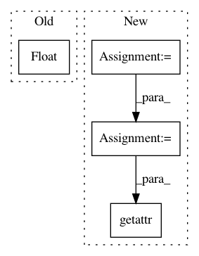

abbfdc5b04ec1824e42cebb472626d234ff7bd36,scripts/speaker_embedding.py,,test,#Any#Any#Any#Any#Any#,383
Before Change
duration = os.path.basename(train_dir)
if "-" in duration:
min_duration, duration = duration.split("-")
min_duration = float(min_duration)
duration = float(duration)
config_dir = os.path.dirname(os.path.dirname(os.path.dirname(train_dir)))
config_yml = config_dir + "/config.yml"
After Change
// -- PREPROCESSORS --
for key, preprocessor in config.get("preprocessors", {}).items():
preprocessor_name = preprocessor["name"]
preprocessor_params = preprocessor.get("params", {})
preprocessors = __import__("pyannote.audio.preprocessors",
fromlist=[preprocessor_name])
Preprocessor = getattr(preprocessors, preprocessor_name)
protocol.preprocessors[key] = Preprocessor(**preprocessor_params)
// -- FEATURE EXTRACTION --
feature_extraction_name = config["feature_extraction"]["name"]
In pattern: SUPERPATTERN
Frequency: 3
Non-data size: 4
Instances
Project Name: pyannote/pyannote-audio
Commit Name: abbfdc5b04ec1824e42cebb472626d234ff7bd36
Time: 2017-01-09
Author: bredin@limsi.fr
File Name: scripts/speaker_embedding.py
Class Name:
Method Name: test
Project Name: CyberReboot/NetworkML
Commit Name: d3babe1252d05f07e58a6602b47e1a09bbd56af5
Time: 2019-12-10
Author: josh@vandervecken.com
File Name: networkml/parsers/pcap/reader.py
Class Name:
Method Name: parse_packet_head
Project Name: pyannote/pyannote-audio
Commit Name: abbfdc5b04ec1824e42cebb472626d234ff7bd36
Time: 2017-01-09
Author: bredin@limsi.fr
File Name: scripts/speaker_embedding.py
Class Name:
Method Name: tune